МГПУ (диплом), Квалификация: Преподаватель педагогики и психологии
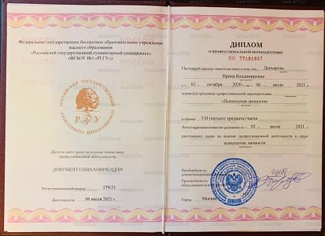
РГГУ (диплом), Квалификация: Психология личности

НАДПО (повышение квалификации), Работа психолога в русле когнитивно-поведенческой терапии с клиентами с симптомами зависимости

НАДПО (повышение квалификации), Кризисные состояния и травмы: стратегии психологической помощи

МИОО (повышение квалификации), Система работы с кадрами и научно-методическое сопровождение УВП
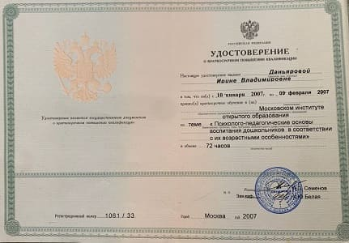
МИОО (повышение квалификации), Психолого-педагогические основы воспитания детей
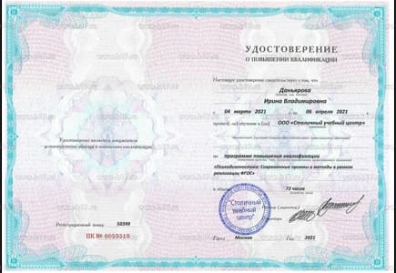
СУЦ (повышение квалификации), Психодиагностика: современные приемы и методы в условиях реализации ФГОС

ИПО (сертификация), Психология семьи

АКПП (повышение квалификации), Терапия пустого усилия

ИКПК (сертификация), Участник научного пленума по консультативной психологии и неклинической психотерапии

ИПО (сертификация), Психология стресса

АКПП (повышение квалификации), Инструменты логики для специалиста КПТ

Аттитюд+ФПК (сертификация), Психомер, практика супервизии. Теория и практика. Обучение в интегративной модели

Аттитюд+ФПК (сертификация), Психологические причины и профилактика неуспеваемости

Аттитюд+ФПК (сертификация), Краткосрочное и долгосрочное консультирование и прочие виды психологических техник

АКПП (повышение квалификации), Участник форума для специалистов КПТ

IEA, (сертификация) Cross-National Comparative Surveys (Сравнительные исследования: модели и методы)
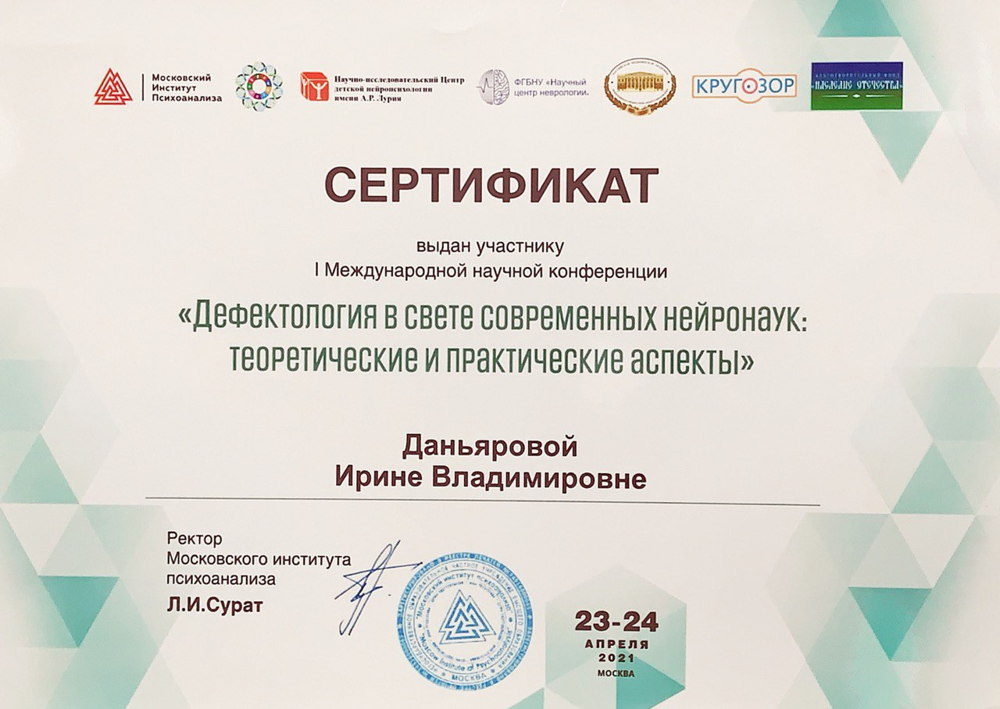
Московский институт психоанализа (конференция), Дефектология в свете современных нейронаук: теоретические и практические аспекты

Институт Психоанализа (сертификация), Психодрама. Испытание временем
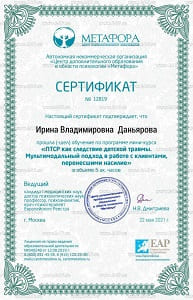
ЦДООП Метафора (сертификация), ПТСР как следствие детской травмы. Мультимодальный подход в работе с клиентами перенесшими насилие
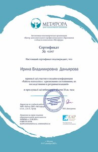
ЦДООП Метафора (конференция), Работа психолога с кризисными состояниями, их последствиями и ретравматизацией
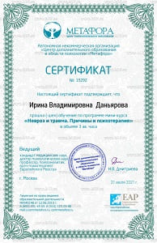
ЦДООП Метафора (сертификация), Невроз и травма. Причины и психотерапия
ЦДООП Метафора (конференция), Работа психолога со сложными эмоциональными переживаниями

ЦДООП Метафора (сертификация), Психологическая помощь в ситуации развода
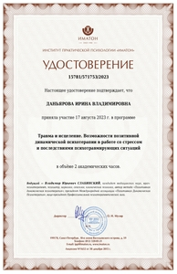
Институт практической психологии «Иматон» (повышение квалификации), Травма и исцеление. Возможности позитивной психотерапии в работе со стрессом и последствиями психотравмирующих ситуаций
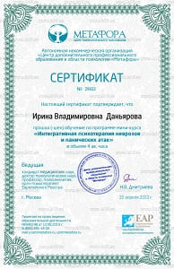
ЦДООП Метафора (сертификация), Интегративная психотерапия неврозов и панических атак
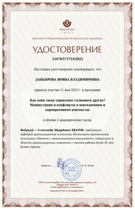
Институт практической психологии «Иматон» (повышение квалификации), Манипуляции и конфликты в повседневном и корпоративном контекстах
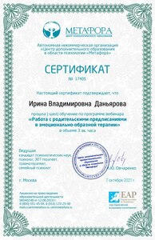
ЦДООП Метафора (сертификация), Работа с родительскими предписаниями в эмоционально-образной терапии
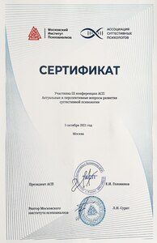
Московский институт психоанализа (конференция), Актуальные и перспективные вопросы развития суггестивной психологии
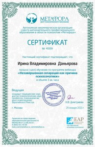
ЦДООП Метафора (сертификация), Незавершенная серпарация как причина психосоматики.